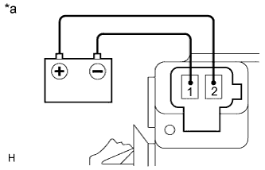

ЗУММЕР СИСТЕМЫ ПРОТИВОСКОЛЬЖЕНИЯ > ПРОВЕРКА |
| 1. ПРОВЕРЬТЕ ЗУММЕР СИСТЕМЫ ПРОТИВОСКОЛЬЖЕНИЯ В СБОРЕ |
|  |
Подайте напряжение аккумуляторной батареи на зуммер системы противоскольжения и убедитесь, что зуммер подает звуковой сигнал.
| Условия измерений | Заданные условия |
| Положительный (+) вывод аккумуляторной батареи → контакт 2 | Зуммер системы противоскольжения издает звуковой сигнал |
| Отрицательный (-) вывод аккумуляторной батареи → контакт 1 |